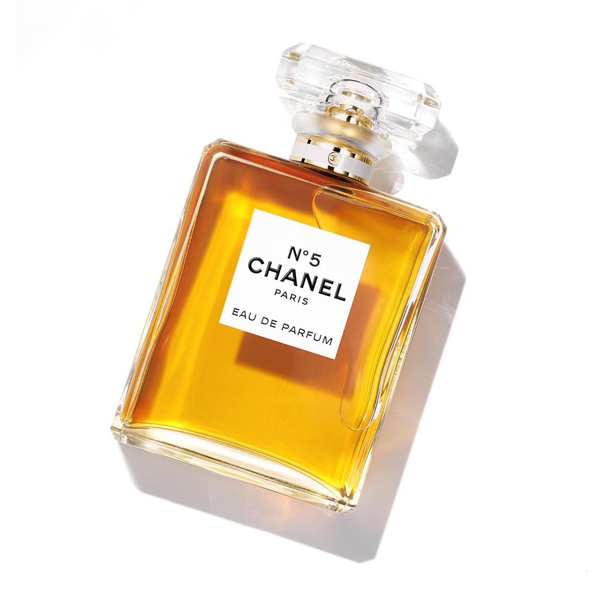

홈 > 브랜드 매거진 > 샤넬
샤넬
샤넬은 패션을 장식이 아니라 태도와 해방의 언어로 바꾼 브랜드다. 브랜드의 힘은 제품의 고급스러움뿐 아니라 여성의 몸과 생활 방식을 새롭게 해석한 상징성에서 나온다.
산업 분야 패션·럭셔리 · 공개 등급 편집 검수 · 브랜드 평가 4.7 ★


한눈에 보는 브랜드
샤넬은 패션을 장식이 아니라 태도와 해방의 언어로 바꾼 브랜드다. 브랜드의 힘은 제품의 고급스러움뿐 아니라 여성의 몸과 생활 방식을 새롭게 해석한 상징성에서 나온다.
브랜드 관점
샤넬은 패션을 장식이 아니라 태도와 해방의 언어로 바꾼 브랜드다. 브랜드의 힘은 제품의 고급스러움뿐 아니라 여성의 몸과 생활 방식을 새롭게 해석한 상징성에서 나온다.
시작과 성장
샤넬(CHANEL)은 프랑스 럭셔리 패션 브랜드로, 가방,의류, 향수, 뷰티, 시계&파인 주얼리 등을 제작 및 판매한다. 샤넬의 디자인은 여성들을 코르셋과 패티코트로부터 해방시켰고, 실용적이면서도 우아함을 드러낼 수 있는 디자인으로 여전히 전 세계 여성들의 사랑을 받고 있다.
브랜드 아이덴티티
“샤넬의 옷은 인위적으로 꾸미지 않은 듯 하면서, 입은 옷에 따라 여성들이 태도나 행동을 바꾸지 않고 쉽게 활동하도록 하는 것이다” - 코코 샤넬 실용성 있는 패션을 통해 여성들에게 진정한 자유를 선사하고자 했던 가브리엘 샤넬의 정신을 바탕으로 클래식하면서도 현대성이 가미된 샤넬만의 아이덴티티를 이어가고 있다. 당시 혁신적인 발상으로 패션 업계를 뒤흔든 샤넬이 만든 패션 제품은 100년이 지난 지금까지 많은 여성이 갖고 싶어하는 패션 아이템으로 사랑받고 있다.
한 세기동안 사랑받고 있는 브랜드 샤넬은 칼 라거펠트의 진두지휘 아래 매년 새로운 컨셉과 컬렉션으로 전 세계인들의 이목을 집중시킨다. 또한 세계적인 순회전시는 이제 샤넬이라는 브랜드를 예술의 관점에서 바라보게 한다.
제품과 서비스
대표 제품과 서비스 정보는 편집 검수 후 공개됩니다.
현재 상태
산업: 패션·럭셔리
타임라인
BI/CI 변천사
함께 읽을 브랜드
 패션·럭셔리 · 매거진 완성프라다
패션·럭셔리 · 매거진 완성프라다프라다는 아름다움을 익숙한 화려함보다 지적인 긴장감으로 표현하는 브랜드다. 소재와 형태, 절제된 색감은 패션을 단순한 장식이 아니라 관찰과 해석의 대상으로 만든다.
 패션·럭셔리 · 편집 검수구찌
패션·럭셔리 · 편집 검수구찌구찌는 이탈리아의 패션·럭셔리 브랜드로, 소재, 실루엣, 로고, 컬렉션 운영이 취향과 지위 신호를 만드는 영역입니다.
 패션·럭셔리 · 편집 검수디젤
패션·럭셔리 · 편집 검수디젤디젤(Diesel)은 1978년 렌조 로소가 이탈리아 브레간체에서 설립한 데님 중심의 컨템포러리 패션 브랜드다. 도발적이고 실험적인 디자인으로 데님 헤리티지를 재해석...
 패션·럭셔리 · 편집 검수자라
패션·럭셔리 · 편집 검수자라자라는 패션을 예측하기보다 시장의 반응을 빠르게 읽고 다시 매장으로 돌려보내는 브랜드다. 트렌드를 길게 기획하는 대신 고객 반응과 유통 속도를 무기로 삼아, 패션을...
 패션·럭셔리 · 매거진 완성루이비통
패션·럭셔리 · 매거진 완성루이비통루이비통은 여행가방에서 출발했지만, 이동의 기능을 럭셔리한 삶의 상징으로 확장했다. 브랜드의 헤리티지는 물건을 담는 도구가 아니라 이동하는 사람의 취향과 지위를 표현...
 패션·럭셔리 · 매거진 완성빅토리아 시크릿
패션·럭셔리 · 매거진 완성빅토리아 시크릿빅토리아 시크릿은 속옷을 기능적 제품이 아니라 무대화된 판타지와 자기표현의 이미지로 포장한 브랜드다. 브랜드는 제품보다 쇼, 모델, 시각적 연출을 통해 소비자가 상상...
 패션·럭셔리 · 매거진 완성스와치
패션·럭셔리 · 매거진 완성스와치스와치는 시계를 고가의 정밀기기에서 매일 바꿔 착용할 수 있는 패션 언어로 전환했다. 시간을 알려주는 기능보다 색, 그래픽, 컬렉션, 가벼운 가격대가 브랜드 경험의...
에르메스는 속도보다 장인성과 기다림의 가치를 브랜드 경험으로 만든다. 제품은 희소성과 품질을 통해 욕망을 만들지만, 더 깊은 차별성은 쉽게 대체되지 않는 제작 태도와...